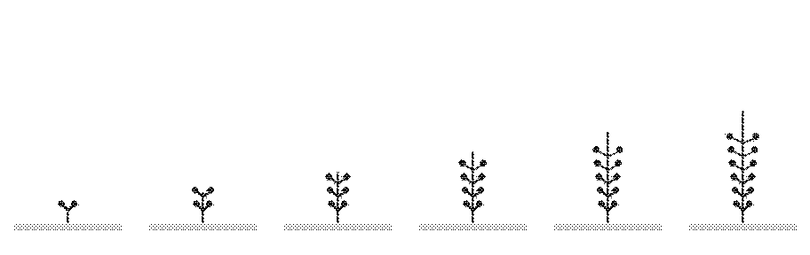
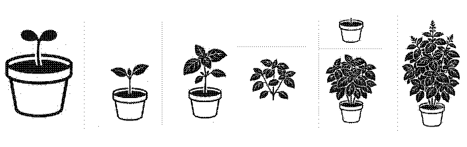
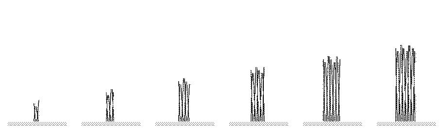
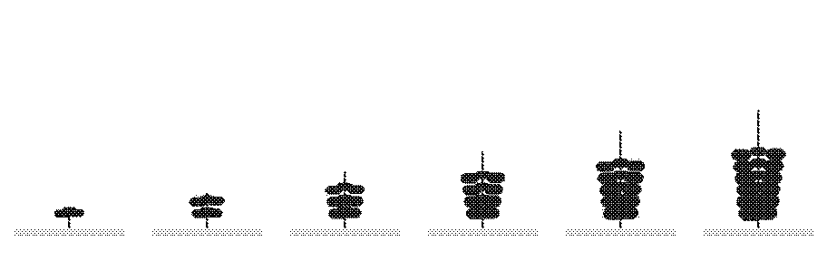
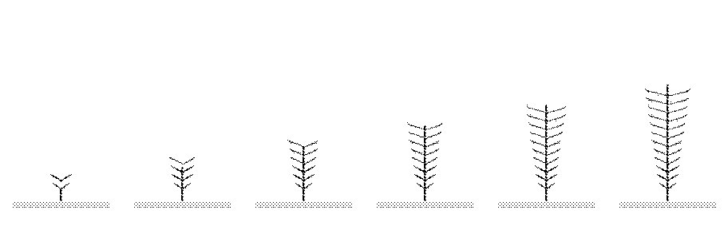
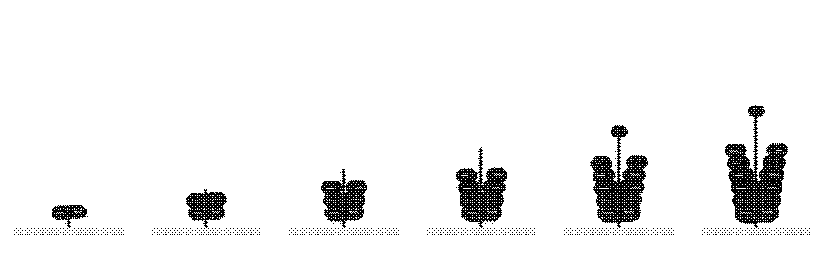
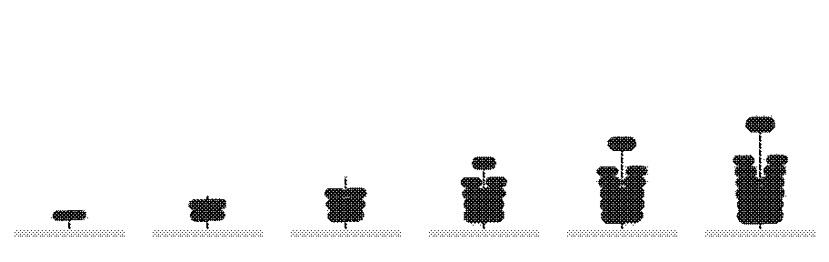

E-ink Growth Preview
Preview-stripit generoitu build_growth_assets.py:lla. Invert vaihtaa normal/invert kuvan.
Invert preview
*_preview.png / *_preview_invert.png
generic

basil

chives

cilantro

dill

mint

parsley
